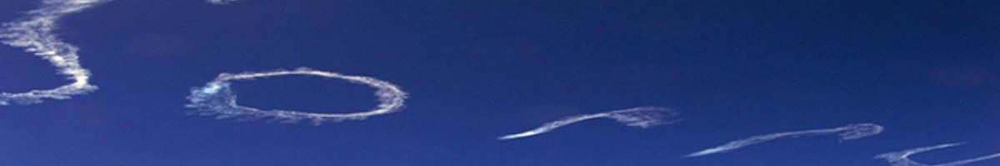

Original Blackboard item · _7400118_1

The majority of non-Indigenous Australians know little of the history of Australia from Indigenous peoples' perspectives. Indigenous Australian Peoples continue to be negatively impacted. Today, this is reflected in the significant health and wellbeing challenges Aboriginal and Torres Strait Islander peoples still face.
In Module 2 we consider the invasion of Australia, the consequences of which underlie and fundamentally relate to the much discussed health ‘Gap’. ‘Epidemic’ proportions of chronic disease, intergenerational trauma, poverty, over incarceration, family violence, poor physical and mental health, and loss of cultural and family connection can be related to the British invasion.
Colonisation profoundly impacted over 300 Aboriginal Nations familial, cultural and community connections across Australia. Dispossession, protectionism, assimilation and attempted cultural genocide are among the flawed and racist policies that still impact Aboriginal and Torres Strait Islander peoples health and wellbeing. The Stolen Generations, racism and the ongoing removal of Indigenous children from families and culture remain significant threats to the SEWB and health of all Indigenous communities.
The trauma of invasion underlies many Aboriginal and Torres Strait Islander peoples reluctance to engage with Western healthcare services today.
By the end of this module you will be able to: